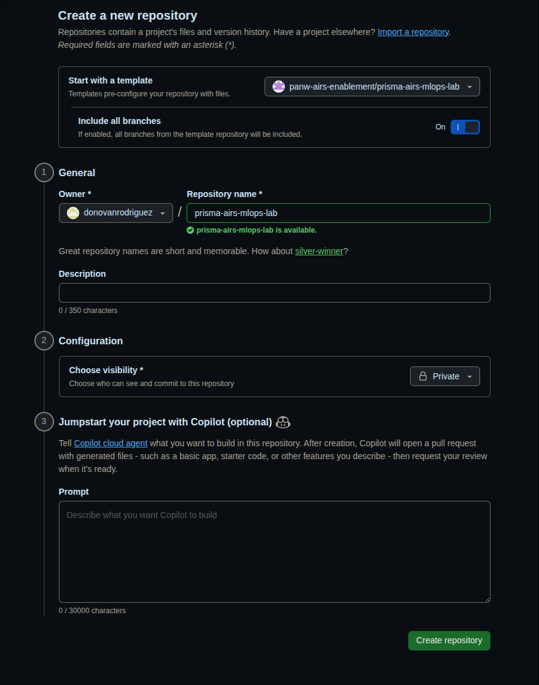

Guía de Configuración del Estudiante Lab
Crea tu repositorio privado del lab, instala las dependencias y lanza Claude Code antes de que inicie el lab
Completa estos pasos antes de que inicie el lab. Al terminar, tendrás tu propia copia privada del repositorio del lab, las dependencias instaladas y Claude Code listo para usar.
Configuración Pre-Lab
Configura un Proyecto GCP vía Torque
Antes de tocar el pipeline, aprovisiona a través de Torque el proyecto GCP que usarás para el lab.
- Navega a
https://laas.paloaltonetworks.com. - Inicia sesión con el SSO empresarial.
- Si no estás ya en la pestaña Self-service, haz clic en Self-service.
Torque requiere la VPN de acceso corporativo. Conéctate antes de navegar a la URL.
- Haz clic en Launch bajo "Create a GCP Project with Owner Permissions".
- Establece el nombre de entorno que desees y configura la duración del entorno en 2 semanas.
- Haz clic en Inputs, configura "Can this be replicated in an on-premise GCS lab (VM/Physical device)?" en No, luego ingresa
GCS-PSOen Case or Project-Id. - Haz clic en Tags, configura activity_type en
developmenty department enTechnical_service. - Haz clic en Launch hacia la parte inferior.
Después de aproximadamente 7 minutos, recibirás un correo con la información de tu proyecto GCP.
Ten estos valores a la mano; los necesitarás al editar .github/pipeline-config.yaml durante el Módulo 0.
Configura tu Repositorio del Lab y Claude Code
- Abre el repositorio template en tu navegador:
https://github.com/airs-labs/prisma-airs-mlops-lab - Haz clic en el botón verde "Use this template" (arriba a la derecha, junto a "Code").
- Selecciona "Create a new repository".
- Configura tu nuevo repo:
- Include all branches — actívalo en On; es necesario para que obtengas tanto el branch
lab(tu espacio de trabajo) como el branchmain(soluciones de referencia) - Owner — selecciona
airs-labs(la organización del workshop) - Repository name —
<tu-nombre>-prisma-airs-mlops-lab(ej.syoungberg-prisma-airs-mlops-lab) - Visibility — selecciona Private
- Include all branches — actívalo en On; es necesario para que obtengas tanto el branch
- Haz clic en "Create repository".
Tu pantalla debería verse así:

Los GitHub Secrets tienen alcance por repositorio. Tu repo contendrá IDs de proyecto de GCP, credenciales de AIRS y configuraciones de despliegue específicas de tu entorno. Un fork público expondría todo esto.
- Clona tu nuevo repo privado:
git clone https://github.com/airs-labs/<tu-nombre>-prisma-airs-mlops-lab.git cd <tu-nombre>-prisma-airs-mlops-lab - Cámbiate al branch
lab:git checkout labEl branch
labes tu branch de trabajo. Tiene la estructura del pipeline pero el escaneo de AIRS aún no está integrado; eso es lo que vas a construir durante el workshop.El branch
maincontiene la implementación de referencia completa. Puedes comparar contra él en cualquier momento congit diff lab..main. - Instala las dependencias de Python:
uv sync
Si no tienes uv instalado: curl -LsSf https://astral.sh/uv/install.sh | sh y reinicia tu terminal.
- Abre Claude Code en el directorio del repo:
claudeClaude ha sido preconfigurado como tu mentor del lab a través del archivo
CLAUDE.mden la raíz del repo. Conoce el código, adapta el ritmo de sus explicaciones y usa preguntas socráticas para guiarte. - Inicia el lab escribiendo:
/lab:module 0El Módulo 0 te guía para verificar tu proyecto de GCP, GitHub CLI y credenciales de AIRS. Claude también te ayudará a conectar tu repo al template para recibir actualizaciones del instructor.
Referencia Rápida
| Comando | Qué Hace |
|---|---|
/lab:module N | Iniciar o retomar el módulo N |
/lab:verify-N | Ejecutar verificaciones del módulo N |
/lab:hint | Obtener una pista progresiva para tu reto actual |
/lab:explore TEMA | Inmersión en un concepto |
/lab:quiz | Evaluar tu comprensión |
/lab:progress | Ver tu dashboard de progreso |
Retomar el Trabajo entre Sesiones
Cuando regreses al lab después de cerrar tu terminal o al día siguiente, sigue estos tres pasos.
Antes de iniciar Claude Code, descarga cualquier cambio que el instructor haya publicado. Abre una terminal en el directorio de tu repo:
cd <tu-nombre>-prisma-airs-mlops-lab
claudeLuego pega este prompt en Claude:
Revisa si tengo un remote "upstream" apuntando a airs-labs/prisma-airs-mlops-lab.
Si no, agrégalo. Luego haz fetch de upstream y merge de upstream/lab en mi branch actual.
Si hay conflictos de merge en lab/.progress.json o .github/pipeline-config.yaml,
quédate con mi versión (--ours) ya que tienen mi configuración personal. Para todo lo demás,
toma la versión de upstream (--theirs).Claude manejará los comandos de git y resolverá cualquier conflicto automáticamente.
Si los cambios de upstream actualizaron CLAUDE.md o archivos del lab, Claude necesita cargar esos cambios. Sal y reinicia Claude Code para que lea las instrucciones más recientes:
/exitclaude/resume recupera tu conversación anterior pero mantiene las instrucciones antiguas de CLAUDE.md. Después de descargar actualizaciones del instructor, una sesión nueva asegura que Claude trabaje con el contenido más reciente del lab. Tu progreso no se pierde; todo está en .progress.json.
Tu progreso se guarda en lab/.progress.json, así que Claude sabe exactamente dónde vas. Ejecuta:
/lab:progressEsto muestra tu dashboard de progreso: qué módulos están completados, tus puntos y cualquier blocker. Luego retoma tu módulo actual:
/lab:module NReemplaza N con el módulo en el que estabas. Claude leerá tu archivo de progreso y continuará desde donde te quedaste.
Agregar el remote upstream (solo la primera vez):
git remote add upstream https://github.com/airs-labs/prisma-airs-mlops-lab.gitDescargar cambios:
git fetch upstream
git merge upstream/lab --no-editSi tienes un conflicto de merge en lab/.progress.json o .github/pipeline-config.yaml, quédate con tu versión (tienen tu configuración personal):
git checkout --ours lab/.progress.json .github/pipeline-config.yaml
git add lab/.progress.json .github/pipeline-config.yaml
git commit --no-editPara conflictos en otros archivos (guías del lab, código, workflows), toma la versión del instructor:
git checkout --theirs ruta/al/archivo
git add ruta/al/archivo
git commit --no-editSolución de Problemas
| Problema | Solución |
|---|---|
| No se ve el botón "Use this template" | Asegúrate de haber iniciado sesión en GitHub y que te hayan agregado a la organización airs-labs |
El branch lab no existe después del clone | No activaste "Include all branches" al crear el template; borra el repo y recréalo con el toggle activado |
uv: command not found | Instala uv: curl -LsSf https://astral.sh/uv/install.sh | sh y reinicia tu terminal |
claude: command not found | Instala Claude Code: npm install -g @anthropic-ai/claude-code |
| Claude no parece saber del lab | Asegúrate de estar en el directorio del repo y en el branch lab; Claude lee CLAUDE.md desde la raíz del repo |
Conflicto de merge en lab/.progress.json | Quédate con tu versión: git checkout --ours lab/.progress.json && git add lab/.progress.json && git commit --no-edit |
No se encuentra el remote upstream | Agrégalo: git remote add upstream https://github.com/airs-labs/prisma-airs-mlops-lab.git |